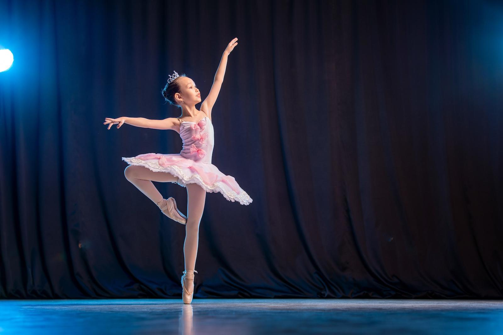
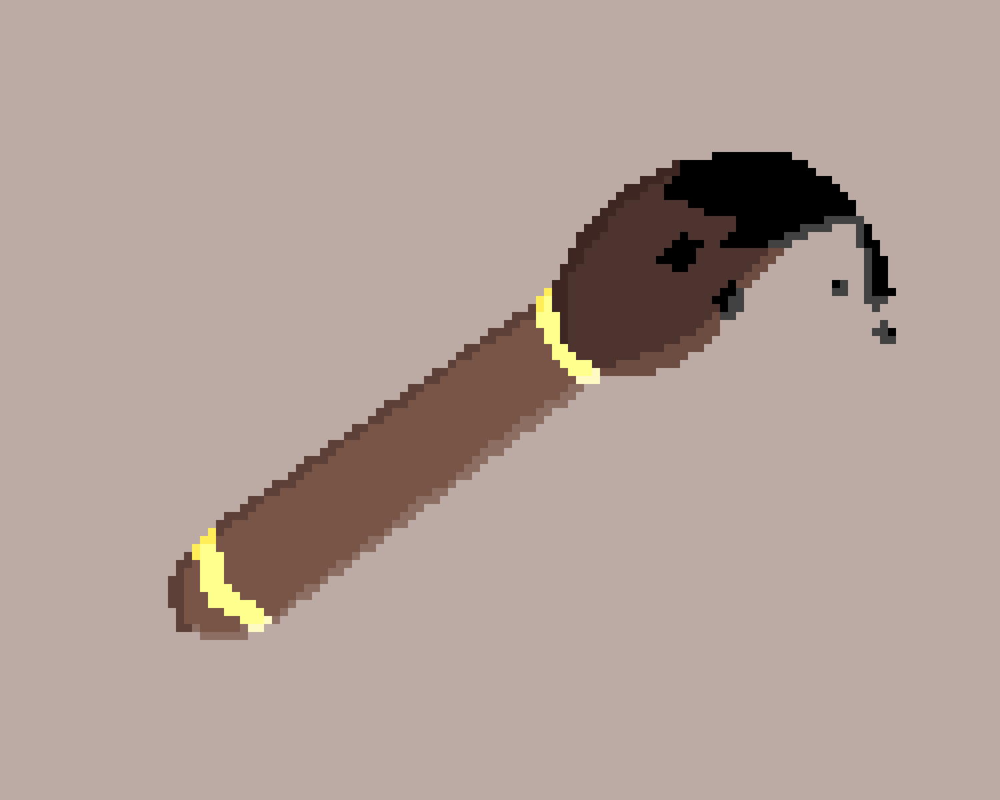

Sceduale
The first thing we do for 4 & 5 graders is History class, here students learn about famous people in history.
After history is either coding or dance, the students choose to where to go. Coding is when the students do some levels of a coding adventure called Ozaria, and Dance is when they learn to dance with good music and games.Mostly musical chairs.
Then there comes science, where we learn about geoalaogy, hydroalaogy, all types of alaogies basically. Mostly geoalaogy.

Then there is theader. Where we play games better then dance, learn about theater tips, and more! Your child can have no shoes in this class.

Then there is LUNCH! You pay for your child's pizza and (s)he can make new friends. A kid named Eric Toledo can also start something called D&D if you come by before summer break 2024.

Then there is Art, we do some art projects and if you finish you get to play with legos and stuff.
Then there is music, where we learn about history of music, new insterments, and if we have time, we watch Astrocats!
Lastly is Reading, where right now we are reading a book called the lemonade war.